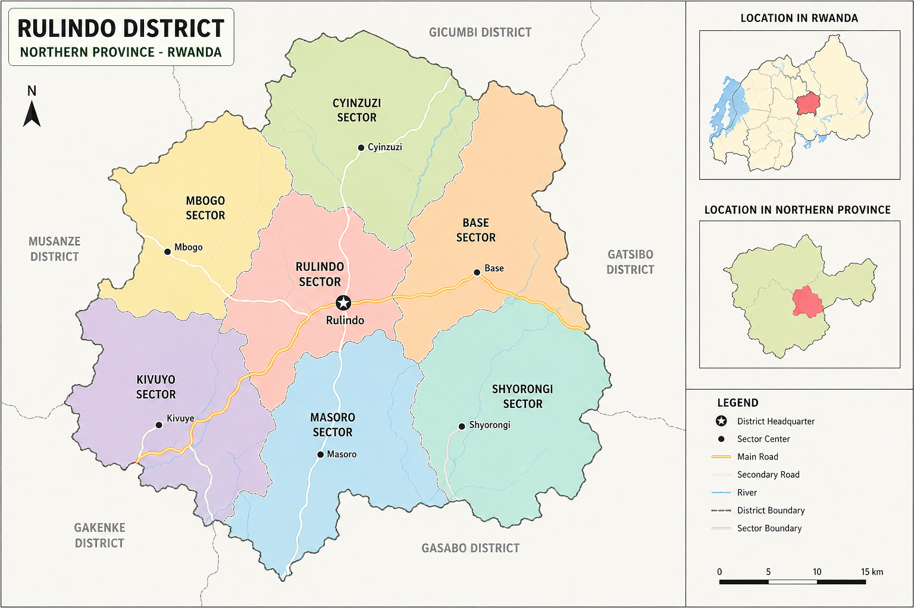

RW-RULINDO AGRO MARKETING
WELCOME TO AGRO MARKETING
Your best place for farming business
Your best place for farming business
Location: Rulindo District is located in the Northern Province of Rwanda.
Climate: It has a cool climate with sufficient rainfall.
Main Crops: Potatoes, beans, maize, cassava, tea.
Mission: To promote sustainable agriculture and trade.
Vision: To become a strong and reliable agricultural cooperative.
